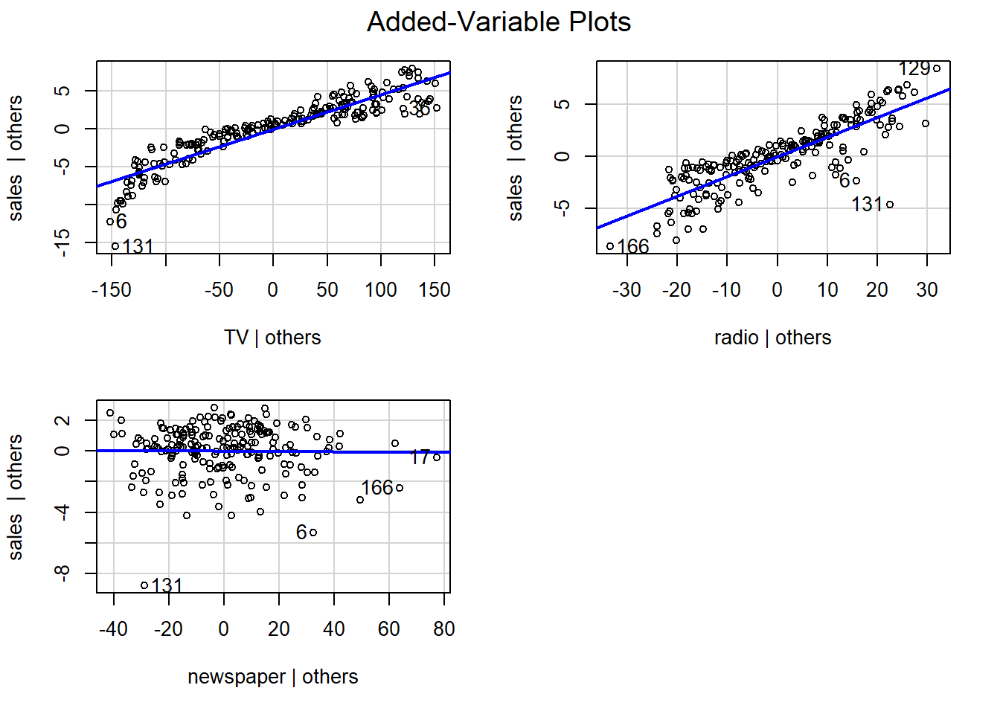

In the first module we restricted our attention to models with a single predictor \(X\) of our outcome \(Y\) and then beat ourselves up trying to decide which of two different possible predictors is best. For example, we could use either non.white or median.income to predict trump.vote in our election2016 dataset. Comparing the \(R^2\) values of the two models, we see that Median Income is slightly better:
library(tidyverse)
Warning: package 'purrr' was built under R version 4.5.3
── Attaching core tidyverse packages ──────────────────────── tidyverse 2.0.0 ──
✔ dplyr 1.1.4 ✔ readr 2.1.5
✔ forcats 1.0.0 ✔ stringr 1.5.1
✔ ggplot2 3.5.2 ✔ tibble 3.3.0
✔ lubridate 1.9.4 ✔ tidyr 1.3.1
✔ purrr 1.2.2
── Conflicts ────────────────────────────────────────── tidyverse_conflicts() ──
✖ dplyr::filter() masks stats::filter()
✖ dplyr::lag() masks stats::lag()
ℹ Use the conflicted package (<http://conflicted.r-lib.org/>) to force all conflicts to become errors
The natural question is: why not just include both predictors in our model if they are significant? In other wordswhy not look at a model of the form \[
Y = f(X_1, X_2) +\varepsilon
\] where $X_1 = $ non.white and $X_2 = $ median.income?
Multiple regression models do just that. They are the natural extension of simple linear models where we are allowed to include more than one predictor \(X\) in our systematic information, but still assume it is a linear function of our parameters. In particular, if we have \(p\) predictors \(X_1,...X_p\), then a multiple regression model is one of the form \[
Y = \beta_0 + \beta_1 X_1 + \cdots \beta_p X_p + \varepsilon
\]
where as before \(\varepsilon \sim Normal(0,\sigma)\).
Our main goals today will be to see how to fit and interpret multiple regression models in R. But before we get to that, a note on notation. Multiple Regression models are often written in the simplified matrix-vector form \[
Y = X \beta + \varepsilon
\] where \[
X = \begin{bmatrix} 1 & X_1 & \cdots & X_p\end{bmatrix}
\] is what we call the model matrix and \[
\beta = \begin{bmatrix} \beta_0 \\ \beta_1 \\ \vdots \\ \beta_p \end{bmatrix}
\] is the coefficient vector. Notice that under this representation, \(\varepsilon\) is technically what we call a multivariate normal random variable, but if we continue to assume that the errors are independent, you can treat it as \(n\) independent normals with the same standard deviation. Please see the Module 2 Theory Supplement for further details about solving for \(\beta\) using the matrix-vector formulation of the least squares problem. In the notes, we’ll mainly just use the matrix-vector formulation as a notational tool.
Fitting Multiple Regression with R
We are going to start with the smaller (in terms of number of variables) dataset Advertising.csv used in the Module 1 practice problems. This dataset has fictional information on number of sales (in thousands of units) and amount spent (in thousands of dollars) on TV, Radio, and newspaper advertising. You can load this dataset from the following url:
Call:
lm(formula = sales ~ newspaper, data = advertising)
Residuals:
Min 1Q Median 3Q Max
-11.2272 -3.3873 -0.8392 3.5059 12.7751
Coefficients:
Estimate Std. Error t value Pr(>|t|)
(Intercept) 12.35141 0.62142 19.88 < 2e-16 ***
newspaper 0.05469 0.01658 3.30 0.00115 **
---
Signif. codes: 0 '***' 0.001 '**' 0.01 '*' 0.05 '.' 0.1 ' ' 1
Residual standard error: 5.092 on 198 degrees of freedom
Multiple R-squared: 0.05212, Adjusted R-squared: 0.04733
F-statistic: 10.89 on 1 and 198 DF, p-value: 0.001148
But instead of picking which model to use, let’s try to fit a multiple regression model of the form
\[
sales = \beta_0 + \beta_1 \times TV + \beta_2 \times radio + \beta_3 \times newspaper + \varepsilon
\] The lm function is easily modified to accomplish this task:
Call:
lm(formula = sales ~ TV + radio + newspaper, data = advertising)
Residuals:
Min 1Q Median 3Q Max
-8.8277 -0.8908 0.2418 1.1893 2.8292
Coefficients:
Estimate Std. Error t value Pr(>|t|)
(Intercept) 2.938889 0.311908 9.422 <2e-16 ***
TV 0.045765 0.001395 32.809 <2e-16 ***
radio 0.188530 0.008611 21.893 <2e-16 ***
newspaper -0.001037 0.005871 -0.177 0.86
---
Signif. codes: 0 '***' 0.001 '**' 0.01 '*' 0.05 '.' 0.1 ' ' 1
Residual standard error: 1.686 on 196 degrees of freedom
Multiple R-squared: 0.8972, Adjusted R-squared: 0.8956
F-statistic: 570.3 on 3 and 196 DF, p-value: < 2.2e-16
Note that if you want to use all other columns as predictors (like in this example), you can use the following . notation shortcut to use all variables other variables on the right side of the formula:
Call:
lm(formula = sales ~ ., data = advertising)
Residuals:
Min 1Q Median 3Q Max
-8.8277 -0.8908 0.2418 1.1893 2.8292
Coefficients:
Estimate Std. Error t value Pr(>|t|)
(Intercept) 2.938889 0.311908 9.422 <2e-16 ***
TV 0.045765 0.001395 32.809 <2e-16 ***
radio 0.188530 0.008611 21.893 <2e-16 ***
newspaper -0.001037 0.005871 -0.177 0.86
---
Signif. codes: 0 '***' 0.001 '**' 0.01 '*' 0.05 '.' 0.1 ' ' 1
Residual standard error: 1.686 on 196 degrees of freedom
Multiple R-squared: 0.8972, Adjusted R-squared: 0.8956
F-statistic: 570.3 on 3 and 196 DF, p-value: < 2.2e-16
Well, that definitely improved on the \(R^2\) value of our model over the individual SLMs, jacking it up to almost 90%! (We’ll talk about the difference between multiple and adjusted \(R^2\) later.) Notice now that we also get a p-value for each of the three predictors. These can be interpreted in the same way as in a SLM; small values correspond to significant predictors. The p-values for both TV and radio are really small and hence, we conclude that their slopes are significantly nonzero. They are important linear predictors. Newspaper, by contrast, has a high p-value; if newspaper had no effect on sales, we would expect a coefficient as large as 0.001 in absolute value about 86% of the time. Therefore, we conclude that newspaper does NOT have a significant linear association with sales and we can safely remove it from our model. The update function is a slick way to pull that off (although you can also just build it from scratch):
Call:
lm(formula = sales ~ TV + radio, data = advertising)
Residuals:
Min 1Q Median 3Q Max
-8.7977 -0.8752 0.2422 1.1708 2.8328
Coefficients:
Estimate Std. Error t value Pr(>|t|)
(Intercept) 2.92110 0.29449 9.919 <2e-16 ***
TV 0.04575 0.00139 32.909 <2e-16 ***
radio 0.18799 0.00804 23.382 <2e-16 ***
---
Signif. codes: 0 '***' 0.001 '**' 0.01 '*' 0.05 '.' 0.1 ' ' 1
Residual standard error: 1.681 on 197 degrees of freedom
Multiple R-squared: 0.8972, Adjusted R-squared: 0.8962
F-statistic: 859.6 on 2 and 197 DF, p-value: < 2.2e-16
Notice that the \(R^2\) values is almost identical: excluding newspaper did not change the amount of variation explained by our model.
Interpreting Coefficients
It is tempting to interpret the coefficients from a multiple regression model in the same way that we interpret the slope in an SLM, but that is misleading. The coefficient of newspaper in the model above was \(-0.001\), but this does not mean that sales is expected to go down by \(-0.001\) for every unit spent on newspaper. In fact, it actually turns out that the coefficient of newspaper in an SLM is positive AND significant:
The correct interpretation of the coefficient of newspaper in the multiple regression model is that we would expect sales to go down \(-0.001\) for every additional unit spent on newspaper WHILE holding TV and radio constant. In other words, if two stores spent the same amount on TV and radio advertising but differed by one unit in newspaper spending, we would expect the state with more newspaper spending to have sales 0.001 lower on average. This is an important distinction because in practice the predictors are often correlated with each other, so changing one while truly holding the others fixed is not always realistic. In this example, there was a positive correlation between newspaper and radio:
Therefore, if we only include the single variable newspaper, it acts as a kind of “surrogate” for radio, stealing its thunder so to speak. When radio is included in the model, the true predictor speaks up and newspaper no longer adds anything to the model.
This is a subtle example of the old adage “correlation does not imply causation”. Just because a predictor appears to be related to a response does not mean that the predictor actually has an effect on the response. There could be a third confounding variable impacting this result. For a more extreme example, read about how ice cream sales can be used to predict murder rates
Why not include Newspaper anyways?
Well, besides the fact that its stupid, there is also the issue of over-fitting. While the overall predictive value of the full model on the full dataset may be better, excluding irrelevant predictors will typically lower RMSE on a test set.
To demonstrate this, let’s do a 70-30 training-testing split on the advertising dataset
We can see that the reduced model is slightly better and even though the difference is small in this example, you can imagine that it could be A LOT bigger in other situations (more on this in Module 4).
To summarize, don’t waste space for irrelevant variables in your model. Simple enough, right?
Visualizing the Fit
Visualizing a multiple regression model with two variables requires a 3D plot since the equation \[
\hat{y} = \beta_0 + \beta_1 x_1 + \beta_2 x_2
\]defines a plane (think \(z = a + bx + cy\)). Unfortunately, ggplot doesn’t do well with 3D plots. For that we need a new package plotly. Install it first and then run the following
library(plotly)
Warning: package 'plotly' was built under R version 4.5.3
Attaching package: 'plotly'
The following object is masked from 'package:ggplot2':
last_plot
The following object is masked from 'package:stats':
filter
The following object is masked from 'package:graphics':
layout
This shows the points \((TV,radio,sales)\). To show the fitted plane we get from our reduced model is somewhat more tedious if you haven’t seen done 3D plotting before. We first have to calculate the function \(z = \hat{\beta}_0 + \hat{\beta}_1 x + \hat{\beta}_2 y\) over a grid of values in the x-y plane. First, let’s check the range of possible TV and radio values:
summary(advertising[,c("TV","radio")])
TV radio
Min. : 0.70 Min. : 0.000
1st Qu.: 74.38 1st Qu.: 9.975
Median :149.75 Median :22.900
Mean :147.04 Mean :23.264
3rd Qu.:218.82 3rd Qu.:36.525
Max. :296.40 Max. :49.600
Notice that TV goes from 0 to around 300 while radio goes from 0 to around 50. We’ll use these as the endpoints of our grid and then space out points by 10 and 5, respectively1
Finally, we plot the predicted values on the z-axis alongside our grid. Note the “t” stands for transpose and flips the yhat matrix so that it matches up with the x- and y-values correctly2:
You can see why the \(R^2\) value was so high. The plane matches the points fairly well…
Wait a second, does it? Personally, I just want to get in there and peal it down on the corners to better match the data. We’ll learn in the next notes how to do just that. We’ll close out these notes with one other visualization tool that will help with higher dimensions and is often easier for people to interpret than the 3D plots above.
Partial Regression Plots
An added variable or partial regression plot shows the relationship between the outcome and each predictors individually after removing the influence of the other predictors from both3. Added variable plots are implemented in the car package4:
library(car)
Loading required package: carData
Attaching package: 'car'
The following object is masked from 'package:dplyr':
recode
The following object is masked from 'package:purrr':
some
avPlots(sales_lm_full)

To interpret these plots, we can say that increasing TV or radio leads to a predicted increase in sales holding spending in the other categories constant while increasing spending in newspaper does not.
You may notice that the slopes are the coefficients from our multiple regression model as opposed to the slopes you would get by fitting three separate SLMs. This is not a coincidence! A famous result in econometrics called the Frisch-Waugh-Lovell Theorem says this will always happen and gives us a precise interpretation of the coefficients in a multiple regression model; they describe the influence of the variable on our outcome after removing the influence of the other predictors from both.
The points with labels are influential points; more on this in Module 2.3!
Practice
Load the election2016 dataset for these exercises.
Fit a multiple regression model to trump.vote using all remaining variables except state and outcome as predictors. Which were significant at a 0.05 level?
Fit a reduced model with only the significant predictors from part 1. Compare the \(R^2\) of the two models.
Produce either a 3D plot or added variable plots for your model in part 2. (If time permits, try both!)
Footnotes
Technically we only need two points in each direction here because the function is linear, but its better practice to include more gridpoints for nonlinear functions↩︎
The axes labeling and colors is unfortunately rather clunky in plotly but I guess if you want nice 3D graphics, you have to deal with it↩︎
More precisely, to get the added variable plot for \(X_j\), we regress \(X_j\) on the other predictors to get predicted values \(\hat X_j\) and calculate the errors \(X_j - \hat X_j\) from our model and do the same for \(Y\). Then we fit an SLM to the errors \(Y-\hat Y\) based on \(X_j - \hat X_j\)↩︎
Here car is actually an acronym for “Classification and Regression”. Its a package that contains additional diagnostic tools for model fitting which we’ll see again in Section 2.3 and other random places throughout the course.↩︎